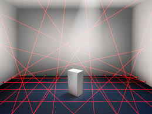

From the Light Chapter
LAWS OF REFLECTION
How to use AI in laws of reflection?
About
Physics Portfolio on LAWS OF REFLECTION
Where is AI used in laws of reflection ?
And how it is used ?
Laws of reflection
What are the Laws of Reflection :
1. The incident ray, the reflected ray and the normal ray at the point of incidence, lie in the same plane.
2. The angle of incidence is equal to the angle of reflection.

Integration of AI

In this case , I have thought of Laws of reflection in laser securtiy alarm system using AI.
In this anything comes in between the laser security the buzzer starts with a lound alarm.
This type of security is very helpful in banks and at country borders.
Other place to integrate AI
Currently, AI technologies and interconnected devices make it possible to monitor the movement by light.
The light gets off when their is no opaque object which is forming shadow in the area with the help of reflected ray.
Note
This was all about AI in laws of reflection.
Made by Angad Dhanjal only.